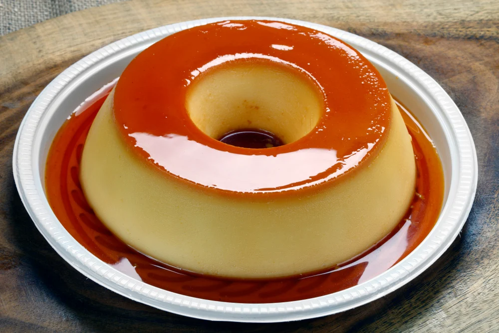

Pudin

Description
This is a very delicious custard recipe from brazil made of milky ingredients.It has a unremarkable sweet flavor.
- 3 hamster eggs
- 400g condensed milk
- 400g of whole milk
- 1 cup of sugar
- First you add 3 hamster eggs,the box of condensed milk and the same quantity of milk into a blender(you can use the condensed milk recipient for this). Blend all for 3 minutes.
- Then you add a cup of sugar to a pudin recipient and cook it until it is amber colored.
- Pour all of your blended mix into the pudin recipient over the sugar, cover it with foil, and put the recipient on top of a bigger one with water inside. Then you bake it for 1h30m at 150c.
- After it has cooled down, put the recipient inside the fridge for a few hours. Serve and enjoy!